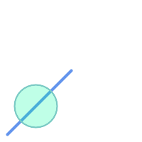
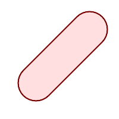
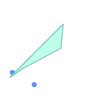
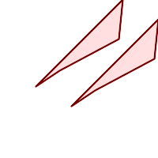

名前
ST_MinkowskiSum — ミンコフスキー和を求めます。
概要
geometry ST_MinkowskiSum(geometry geom1, geometry geom2);
説明
ポリゴンと、ポイント、ライン、ポリゴンのいずれかとの2次元のミンコフスキー和を計算します。
二つのジオメトリAとBのミンコフスキー和はAとBのあらゆるポイントの和の集合です。ミンコフスキー和は、しばしば動作計画とCADで使われます。より詳細な情報についてWikipedia Minkowski additionをご覧ください。
一つ目の引数は2次元ジオメトリ (ポイント、ラインストリング、ポリゴン)とすることができます。3次元ジオメトリを渡すと、Zを0とした2次元に強制され、この場合は無効と考えられます。二つ目の引数は2次元ポリゴンでなければなりません。
CGAL 2D Minkowskisumを利用して実装しています。
Availability: 2.1.0
 このメソッドにはSFCGALバックエンドが必要です。
このメソッドにはSFCGALバックエンドが必要です。
例
ラインストリングと円ポリゴンであって、ラインストリングがポリゴンを横切るミンコフスキー和
|
 ミンコフスキー和を実行する前
|
 ミンコフスキー和実行後
|
SELECT ST_MinkowskiSum(line, circle))
FROM (SELECT
ST_MakeLine(ST_Point(10, 10),ST_Point(100, 100)) As line,
ST_Buffer(ST_GeomFromText('POINT(50 50)'), 30) As circle) As foo;
-- wkt --
MULTIPOLYGON(((30 59.9999999999999,30.5764415879031 54.1472903395161,32.2836140246614 48.5194970290472,35.0559116309237 43.3328930094119,38.7867965644036 38.7867965644035,43.332893009412 35.0559116309236,48.5194970290474 32.2836140246614,54.1472903395162 30.5764415879031,60.0000000000001 30,65.8527096604839 30.5764415879031,71.4805029709527 32.2836140246614,76.6671069905881 35.0559116309237,81.2132034355964 38.7867965644036,171.213203435596 128.786796564404,174.944088369076 133.332893009412,177.716385975339 138.519497029047,179.423558412097 144.147290339516,180 150,179.423558412097 155.852709660484,177.716385975339 161.480502970953,174.944088369076 166.667106990588,171.213203435596 171.213203435596,166.667106990588 174.944088369076,
161.480502970953 177.716385975339,155.852709660484 179.423558412097,150 180,144.147290339516 179.423558412097,138.519497029047 177.716385975339,133.332893009412 174.944088369076,128.786796564403 171.213203435596,38.7867965644035 81.2132034355963,35.0559116309236 76.667106990588,32.2836140246614 71.4805029709526,30.5764415879031 65.8527096604838,30 59.9999999999999)))
ポリゴンとマルチポイントとのミンコフスキー和
|
 ミンコフスキー和を実行する前
|
 ミンコフスキー和実行後: 重複ポリゴンが生成されポイントの位置に移動
|
SELECT ST_MinkowskiSum(mp, poly)
FROM (SELECT 'MULTIPOINT(25 50,70 25)'::geometry As mp,
'POLYGON((130 150, 20 40, 50 60, 125 100, 130 150))'::geometry As poly
) As foo
-- wkt --
MULTIPOLYGON(
((70 115,100 135,175 175,225 225,70 115)),
((120 65,150 85,225 125,275 175,120 65))
)